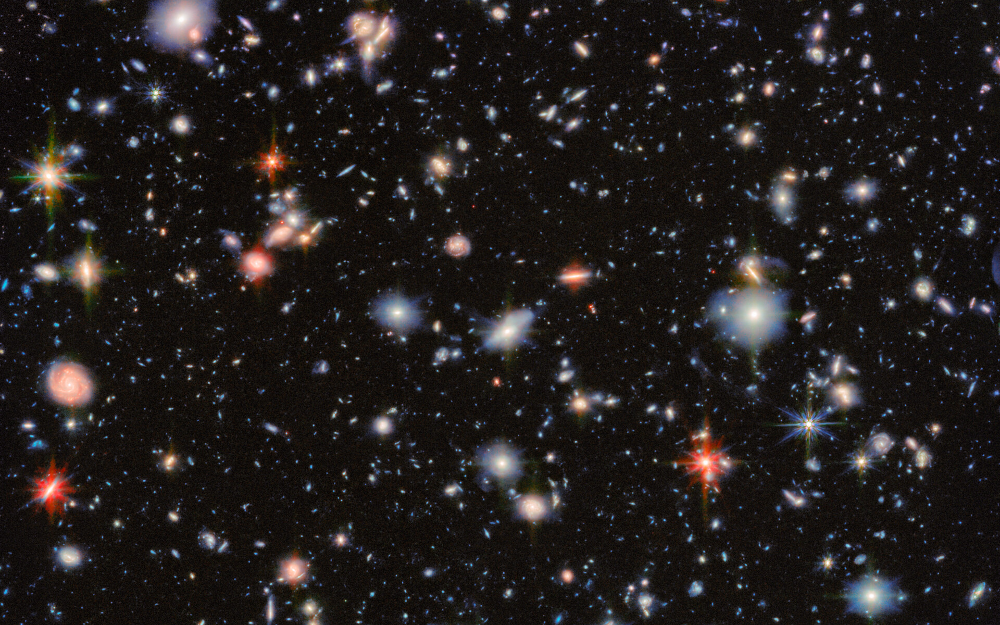

Some Of The James Webb Captures


Space is the vast, mysterious expanse that surrounds our world. It is home to countless stars, planets, galaxies, and phenomena that challenge our imagination and understanding. From brilliant nebulae to massive black holes, every corner of the universe tells a story billions of years in the making. Exploring space helps us discover not only the secrets of the cosmos, but also our place within it.

the button on the right sits there and waits for any curious space observers!